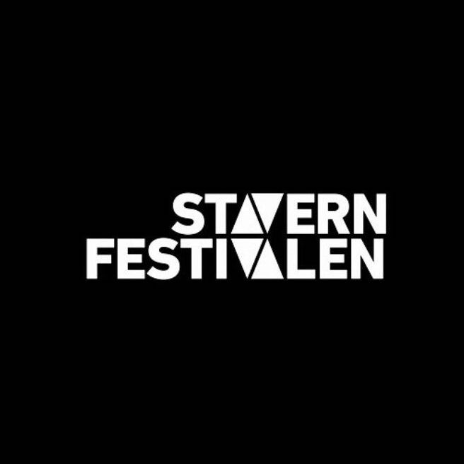
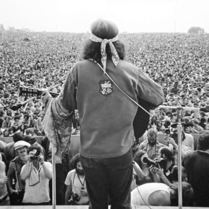
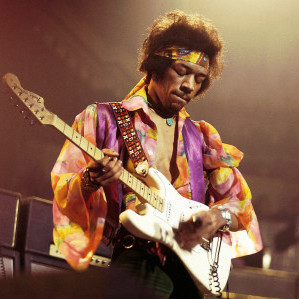

Events

Tons of Rock
June 25-27, 2020
Jostein brings his guitar to Norways biggest rock festival to play alongside legends such as Kiss, The Beatles and Pink Floyd!

Stavernfestivalen
July 9-11, 2020
Don't miss out on Josteins performance during Norways biggest festival! Join 40 000 other participants for the biggest highlight of the summer!

Woodstock 1969
August 15-17, 1969
Did you miss woodstock back in '69? No worries! Jostein will take you back with his uniqe guitarplay so you can experience the most important festival of all time!

Jimi Hendrix vs Jostein Hodne
March 10, 2020
Experience a real guitarbattle! Jostein will face the legendary Jimi Hendrix! Who will be victorious?